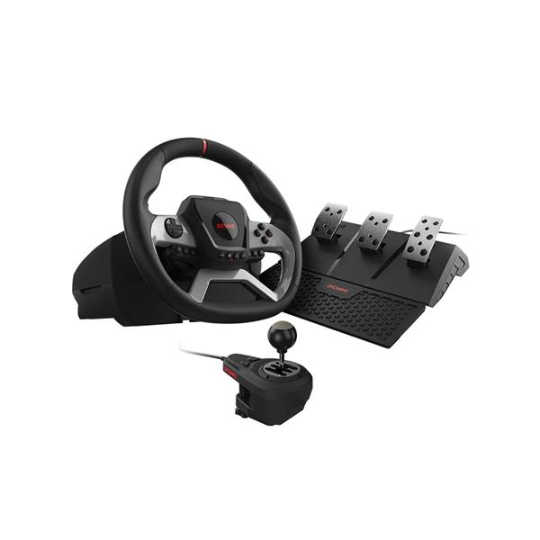

O Volante PCYES W270 foi projetado para simulação com realismo, controle absoluto e performance de nível profissional, trazendo Force Feedback de motor duplo e rotação de até 1080°. O conjunto inclui pedais de acelerador, freio e embreagem, além de câmbio manual, com compatibilidade para PC, PlayStation 4, Xbox One e Xbox Series X|S.